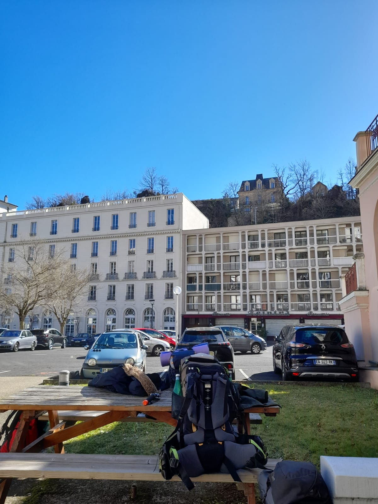

L'aventure commence à 6h du matin le 28 février à la gare de Paris Bercy.
C'est là qu'on s'est donné rendez-vous : Darron, David, Quentin et Hugo, les 4 membres de l'équipe SYL qui pouvaient et voulaient bien partir pour ce trek de 5 jours.
Après 3h30 de train et quelques sieste plus tard, on arrive à la gare de Clermont Ferrand, la 1er étape de ce voyage.
On a ensuite pris le bus B qui nous a déposés à Royat, où on a mangé un délicieux sandwich triangle sous un beau soleil.
A 12h30, une navette nous attendait sur le parking de l'office du tourisme, pour nous amener à notre point de départ....enfin pas loin.
Après 15min de route en zig zag, la navette nous dépose sur un parking à Enval, c'est là que commence réellement l'aventure, entre nous et la boucle des dômes.
Arrivé sur le parking, on tombe nez à nez avec le Puy de dômes, visuellement joli, mais qui nous réservera bien des surprises...
On entame donc la marche direction dans un 1er temps, la gare panoramique des dômes. Là, on se rend vite compte que nos sacs de 17kg ne seront pas simples à porter.
Arriver à la gare du panoramique, on fait le plein d'eau et on décide de repartir pour quelques kilomètres de plus, afin de prendre un peu d'avance sur le trajet.
On traverse la forêt mystique, puis on entre dans une partie où le terrain est boueux et surtout en pente.... la 1er difficulté n'est pas simple pour tout le monde. Après cette grosse montée, on arrive au parking du col de Ceyssat, où on décide de chercher un endroit où passer la nuit.
Après 10min de recherche dans la forêt on tombe sur un emplacement qui nous semble parfait pour la nuit.
On se dépêche de monter les tentes 2 par 2, pour vite se réchauffer en buvant un thé. On sort la bonbonne de gaz, le réchaud, l'eau, le thé et c'est parti! Ah nan.... en fait la bonbonne et le réchaud ne sont pas compatibles, on se fera donc toute la semaine sans gaz... 1er galère de la semaine!
On va donc devoir faire du feu, heureusement on a ramener des allume feu, mais il nous fait qd même du bois sec et surtout la bonne technique pour faire partir le feu et le maintenir.
Après plusieurs tentatives, ça y est, le feu est parti, on peut manger !! Le thé attendra un peu, on a trop faim!!
La nuit commence à tomber et nous on passe à table, pour le 1er repas, ce sera coquillette, emmental et saucisson (ou viande de grison), un repas de luxe! En dessert, ce sera la classique chamalow au feu de camp! Un délice avant d'aller se coucher !!
Une fois qu'on a tout ranger, on est parti pour le 1er dodo de la semaine !
Gare de départ - Enval
Premier campement - Col de Ceyssat

Office du tourisme de Royat